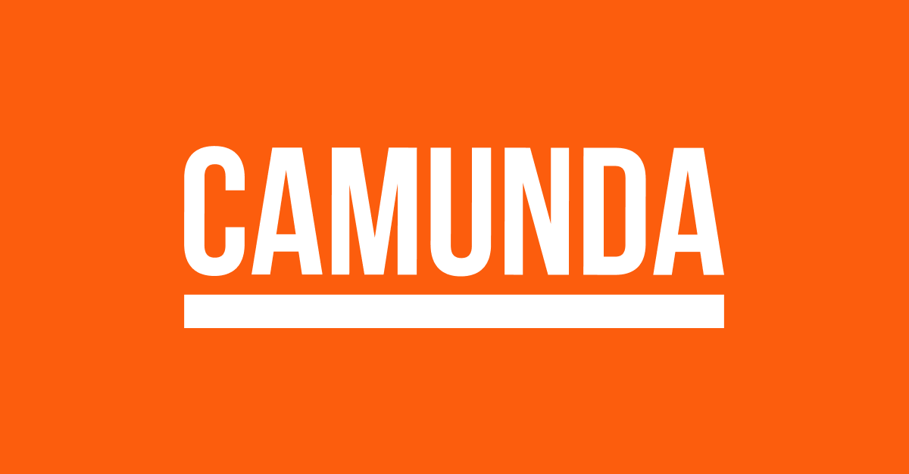
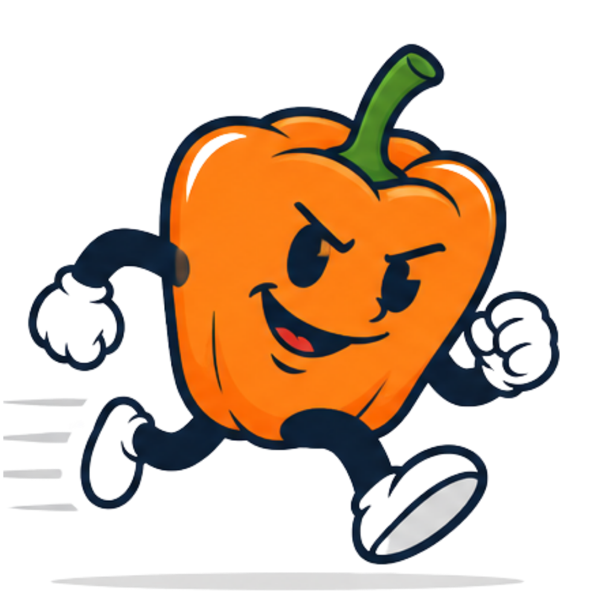

Paprika AuditFlow Pro
La suite unifiée d'audit qualité, de cartographie hiérarchique multi-BPMN et de gouvernance logicielle pour Camunda Platform 7 & 8 (Zeebe).
Pourquoi auditer nos processus BPMN ?
Les défis majeurs de l'orchestration de processus à grande échelle
- Variables fantômes (Ghost) : Données créées mais jamais consommées, alourdissant le contexte d'exécution.
- Variables orphelines : Variables utilisées dans des gateways FEEL sans affectation préalable → Erreurs bloquantes en production.
- Incohérences de nommage : Mélange de camelCase, snake_case, espaces, caractères spéciaux bloquant le moteur.
- Effet "Boîte Noire" : Impossibilité de visualiser l'impact d'une modification sur les sous-processus appelés.
- Documentation obsolète : Plusieurs jours d'effort manuel par release pour documenter les flux.
- Détection instantanée : Analyse multi-BPMN en 1 clic avec traçabilité complète de chaque variable.
- Standardisation stricte : Application des règles d'ingénierie logicielle (camelCase, verbes d'action, gateways interrogatives).
- Cartographie hiérarchique : Visualisation topologique (DAG interactif) des orchestrateurs et call activities.
- Auto-Fix & ZIP coordonné : Correction automatique sans risque d'erreur humaine.
- Documentation PMG automatisée : Génération immédiate des matrices techniques et guides d'onboarding.
100% Client-Side & Zéro Backend
Une architecture ultra-sécurisée, instantanée et autonome
Confidentialité Totale
Vos diagrammes BPMN et variables métier ne quittent jamais le poste de travail. Zéro transfert réseau externe.
- Parseur DOM XML natif JS
- Conforme exigences sécurité SI
Performance Instantanée
Analyse de dizaines de processus et de milliers de variables en moins de 3 secondes sans latence serveur.
- Algorithmes graphes optimisés (DFS)
- Rendu interactif via Vis.js
Persistance & Offline
Fonctionne hors-ligne via Service Worker (PWA) avec persistance locale dans IndexedDB & LocalStorage.
- Historique des audits persistant
- Export/Import JSON de sessions
Une suite complète en 6 Modules
Un écosystème unifié pour couvrir tout le cycle de vie du BPMN
1. Audit Variables Multi-BPMN
Audit syntaxique, détection de ghost variables, traçabilité I/O et auto-fix en lot.
2. Sous-processus & Dépendances
Cartographie topologique, détection des boucles récursives infinies et criticité.
3. Nommage des Éléments
Contrôle des conventions BPMN (tâches, gateways, événements de début/fin, IDs).
4. Matrice PMG & Documentation
Process Matrix Governance, lignage de données, export Markdown et dossier technique PDF.
5. Simulateur de ROI
Quantification financière des gains, ETP libérés, heures économisées et Payback period.
6. Comparateur Diff BPMN
Visual Diff entre versions A et B : ajouts, suppressions et modifications en surbrillance.
Audit des Variables & Moteur Multi-BPMN
Maîtrisez le flux et le cycle de vie des données de bout en bout
Qualification du Cycle de Vie
-
Producteur (Write)
Variable instanciée dans une tâche, formulaire ou
outputParameter. -
Consommateur (Read)
Variable lue dans une condition FEEL/JUEL ou
inputParameter. -
Flux In / Out
Variable propagée à travers une
callActivityvers un sous-processus. - Ghost Variable Variable créée mais jamais lue en aval (inutile, charge mémoire).
Fonctionnalités Avancées
- File Batch Queue Manager : Import de 1 à 50+ fichiers BPMN simultanément.
- Inspecteur Slide-Over Drawer : Timeline chronologique avec extraits XML réels en surbrillance.
- Auto-Fix 1-Clic Multi-BPMN : Renommage standardisé et export d'une archive
.zipprête à déployer. - Export Excel 5-Feuilles : KPIs, Variables, Hiérarchie, CallActivities, Variables Mortes.
Cartographie Hiérarchique & Sous-processus
Visualisation topologique des Call Activities et détection des boucles
Détection de Boucles
Algorithme DFS (Depth-First Search) pour identifier instantanément les dépendances récursives circulaires critiques.
3 Modes de Visualisation
- Arborescence Tree : Structure parent/enfants.
- Graphe DAG Vis.js : Topologie orientée.
- Matrice I/O : Table d'appels & variables.
Analyse d'Impact
Score de centralité et détection des sous-processus manquants dans le lot (calledElement non fournis).
Audit des Conventions de Nommage BPMN
Standardisation rigoureuse selon les meilleures pratiques d'ingénierie logicielle
Référentiel des Règles Clés
- Tâches Verbe à l'infinitif + Complément : « Valider le panier client »
- Gateways Formulation interrogative (?) : « Client éligible fibre ? »
- Événement Début Objet + Participe passé : « Commande reçue »
- Événement Fin État métier final atteint : « Dossier clôturé »
- Variables camelCase strict : « codePostalClient »
Moteur Extensible & Auto-Correction
- Règles configurables : Activation/désactivation et ajout de règles Regex sur-mesure.
- Suggestions intelligentes : Proposition de renommage conforme en temps réel.
- Édition inline : Ajustement manuel direct dans la table d'audit.
- Téléchargement BPMN corrigé : Réécriture du XML prête pour le déploiement.
Gouvernance PMG & Documentation Automatisée
Devenez maître de vos processus grâce à la matrice d'ingénierie et au glossaire de données
Matrice Interactive
Recensement des pools, lanes, user/service tasks, entrées/sorties et saisie des règles de gestion métier.
Glossaire & Lignage
Inventaire de chaque variable avec identification des tâches productrices (Write) et consommatrices (Read).
Génération de Dossier
Génération en 1 clic d'un dossier technique complet exportable en Markdown ou PDF d'onboarding.
Simulateur de ROI & Comparateur Diff
Démontrez la rentabilité financière et sécurisez chaque montée de version

Simulateur de ROI Intégré
Permet aux POs et managers de calculer immédiatement les bénéfices économiques de l'optimisation :
- Heures de travail économisées par an
- Gains financiers nets (€) & ETP libérés
- Période de retour sur investissement (Payback)
- Export de note de synthèse pour comités de direction
Comparateur Diff (Version A vs B)
Analyse différentielle fine entre deux versions d'un même diagramme BPMN :
- Ajouts : Nouvelles tâches, events, variables
- Suppressions : Éléments retirés ou dépréciés
- Modifications : Libellés, expressions FEEL, I/O
Une ergonomie moderne & pensée pour les pros
Rapidité de navigation, raccourcis clavier et design soigné
Recherche globale et navigation éclair dans toute l'application
Thème officiel clair & sombre avec mascottes Paprika dynamiques
Excel 5 feuilles, CSV, JSON, Markdown, PDF, BPMN & ZIP
Bouton 1-clic pour charger des jeux de données d'exemple
Bénéfices concrets pour les équipes
Un impact direct sur la qualité logicielle et l'efficacité opérationnelle
Zéro Incident en Production
Éradication des erreurs d'exécution FEEL/JUEL causées par des variables mal nommées ou orphelines.
Gain de Temps x10
Passage d'audits manuels fastidieux de plusieurs heures à un audit complet et un auto-fix en quelques secondes.
Onboarding Accéléré
Les nouveaux développeurs et architectes appréhendent les chaînes de sous-processus complexes en quelques minutes grâce aux cartographies.
Merci pour votre attention !
Place à la démonstration live et à vos questions.